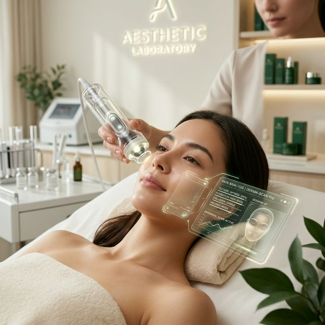
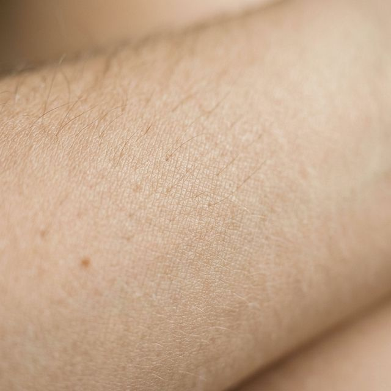
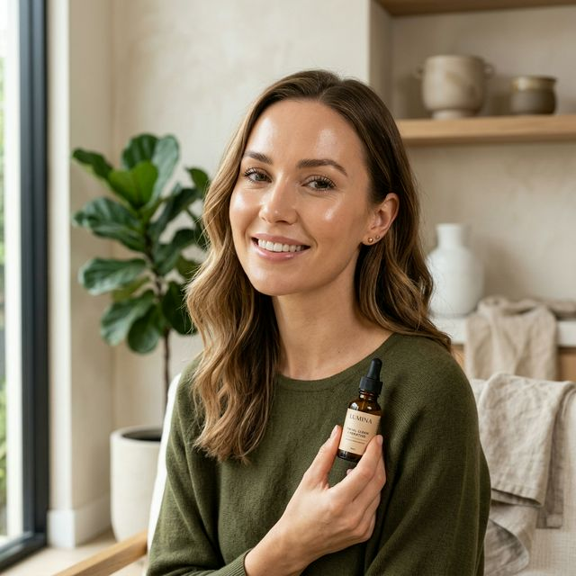
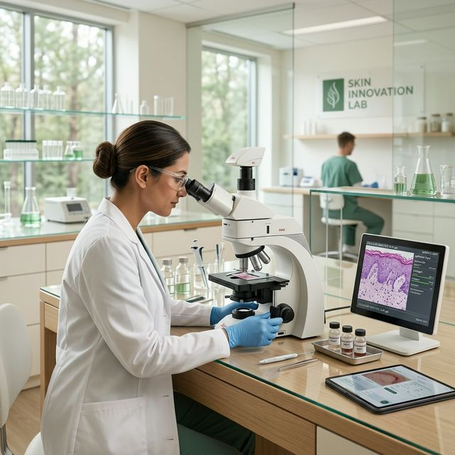

Seret foto ke sini
atau klik untuk menelusuri dari perangkat
Belum ada foto? Coba dengan sampel:
BeautyScan menggunakan AI klinis canggih untuk memetakan biologi unik kulitmu dan memberikan panduan personal menuju ketahanan kesehatan jangka panjang.




Kami menggabungkan dataset dermatologi dengan jaringan saraf tiruan untuk memberikan pandangan holistik tentang kesehatan kulitmu, jauh melampaui pengamatan permukaan saja.
Setiap orang memiliki susunan biologi yang unik. BeautyScan memetakan penanda spesifikmu untuk menciptakan panduan yang membantu kulit menemukan keseimbangan alaminya.
Proses instan tanpa ribet, privasi terjamin 100%.
Potret wajahmu di pencahayaan yang natural. Tanpa makeup lebih baik.
Teknologi cerdas kami akan mendeteksi dari pori, flek, hingga tingkat hidrasi.
Terima kurasi produk skincare yang memang dibutuhkan oleh kulitmu.
Ditenagai AI dengan dataset jutaan profil kulit Asia, memberikan detail luar biasa.
Kami tidak berafiliasi murni dengan satu brand. Rekomendasi didasarkan pada kecocokan sains.
Foto wajahmu dianalisis secara lokal atau langsung dihapus tanpa pernah disimpan di server kami.
Mulai unggah selfie terbaikmu. Pastikan pencahayaan cukup dan wajah terlihat jelas.
atau klik untuk menelusuri dari perangkat
Belum ada foto? Coba dengan sampel:
"Sangat membantu! Aku gatau kalau selama ini wajahku berminyak karena dehidrasi. Rekomendasi produknya juga gampang dicari."

"Visual hasil analisisnya gampang banget dimengerti. Wajib rutin cek foto wajahku tiap bulan pakai BeautyScan untuk tracking."

Semua yang perlu kamu ketahui tentang teknologi BeautyScan.